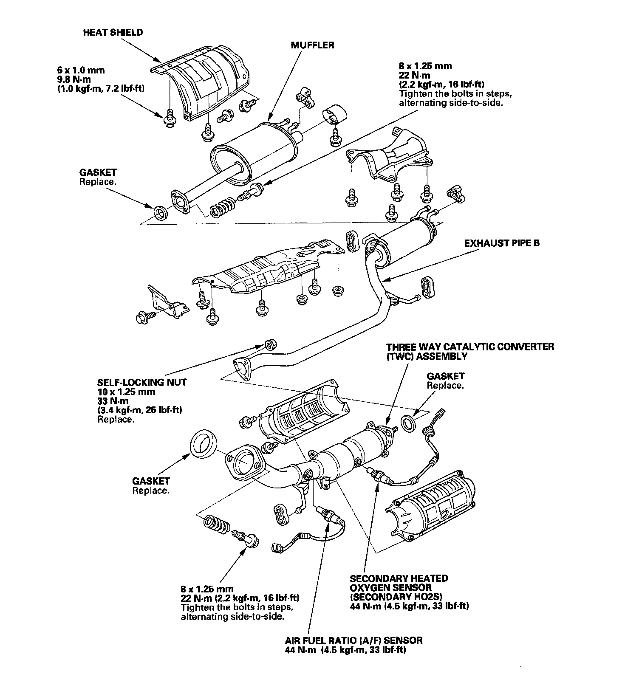

Operation CHARM
: Car repair manuals for everyone.
Home
>>
Honda
>>
2007
>>
Civic Si L4-2.0L
>>
Repair and Diagnosis
>>
Engine, Cooling and Exhaust
>>
Exhaust System
>>
Exhaust Pipe
>>
Service and Repair
Exhaust Pipe: Service and Repair
Exhaust Pipe
and
Muffler
Replacement
NOTE:
Use new gaskets and self-locking nuts when reassembling.
